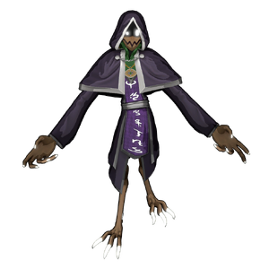

Mephiel
背景

在谋杀兄弟 Veelch 的尝试失败后，被称为 Corrupt God of Dominion 的 Mephiel 被囚禁在兄弟创造的孤独维度中。这个维度只会不断提醒 Mephiel，究竟是什么驱使他对家人犯下背叛之举：那就是触及多元宇宙的能力。Veelch 拥有这种能力，而这正是这名背叛者极度嫉妒兄弟的原因。Mephiel 天生拥有吸收他人魔法力量并为己所用的能力。他完全准备好用这份邪恶力量对付自己的手足，以满足自己的自私与贪婪。
数百年孤立之后，当一名维度闯入者 DarkGrey 落入他的掌控时，Mephiel 欣喜若狂。他看见了逃出牢笼的唯一途径，于是操纵这个灰色黏液生物为自己效命，并替他击败兄弟。Mephiel 的计划成功了。在获得梦寐以求已久的维度旅行能力后，他开始尽可能在多元宇宙中聚集力量。
策略
Mephiel 战斗由 2 个阶段组成。第 2 阶段招式组大幅扩展，先前招式也会被强化。
Mephiel 是一个偏弹幕风格的 Boss，会用大量危险区域覆盖竞技场。第 2 阶段中，Mephiel 会获得飞行能力，让玩家有一段时间更专注于生存，而不是伤害 Boss。
Mephiel 拥有强力的旋转披萨切刀招式，需要玩家围绕其旋转移动。
统计
基础 HP：19000
伤害：暗影
该 Boss 由两个阶段组成。
| 属性 | 抗性 |
|---|---|
| 物理 | 中性 (1x) |
| 火焰 | 中性 (1x) |
| 冰霜 | 中性 (1x) |
| 电击 | 抗性 (0.75x) |
| 光耀 | 弱点 (1.5x) |
| 暗影 | 中性 (1x) |
| 毒 | 中性 (1.1x) |